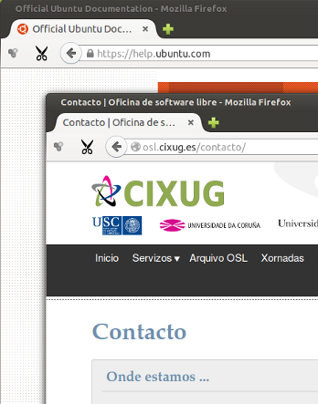

<div class="main wide green-background">
    <div class="text small-text background-gray">
        <h1 class="innertitle">Onde atopar axuda?</h1>
        <div>
            <p>Pode atopar axuda de varias fontes, na comunidade de software libre galega como primeiro paso sabendo que ten ademais acceso aberto á <strong>comunidade internacional do software libre</strong> que constitúe probabelmente a maior rede de coñecemento e apoio interpersoal do planeta.</p>

            <p>A nosa comunidade está formada por varios axentes: partindo da propia <strong>Oficina de Software Libre</strong> que ofrece esta distribución, a Asociación Galega de Empresas de Software Libre (AGASOL), as asociacións de usuarios de software libre galegas (AGUSL) e mesmo usuarios, profesionais e expertos independentes que apoian o software libre na nosa terra en calquera das súas múltiplas facetas.</p>
        </div>
    </div>

    
</div>

